nieuwesdoorn.glbEsdoorns en struiken5.6 MB · 20.390 driehoeken · 28 texturen (max 1024 px)“Maple trees pack (lowpoly, game ready, LODs)” — lolipop_1707, Sketchfab; CC BY 4.0
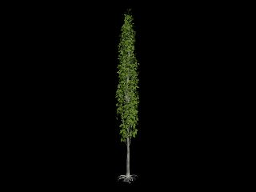
nieuwpopulier.glbItaliaanse populier2.5 MB · 25.630 driehoeken · 11 texturen (max 1024 px)“Realistic HD Lombardy poplar (16/75)” — PlantCatalog, Sketchfab; CC BY 4.0
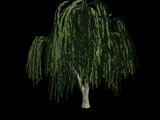
nieuwwilg.glbTreurwilg816 kB · 9.082 driehoeken · 4 texturen (max 1024 px)“Willow” — evolveduk, Sketchfab; CC BY 4.0
boten
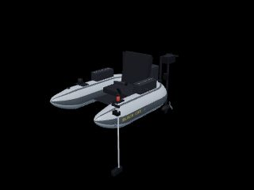
nieuwblackcat.glbBlack Cat Battle Boat (Wim)137 kB · 26.406 driehoeken · 1 texturen (max 512 px)Zelf gebouwd in Blender naar Bobs foto's (tools/boten/bellyboat.py); eigen werk
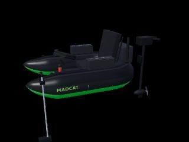
nieuwmadcat.glbMADCAT (Dave)159 kB · 31.386 driehoeken · 1 texturen (max 512 px)Zelf gebouwd in Blender naar Bobs foto's (tools/boten/bellyboat.py); eigen werk
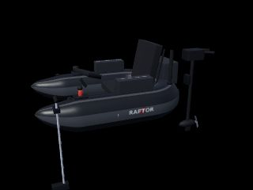
nieuwraptor.glbRaptor 180 (Paul en Bob)137 kB · 26.406 driehoeken · 1 texturen (max 512 px)Zelf gebouwd in Blender naar Bobs foto's (tools/boten/bellyboat.py); eigen werk
dieren
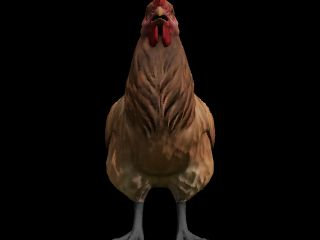
nieuwkip.glbKip (met bewegingen)1.7 MB · 7.305 driehoeken · 2 texturen (max 512 px)“ANIMAL & FOOD | Chicken Model (CS2)” — kill6lucius, Sketchfab; CC BY 4.0
drank
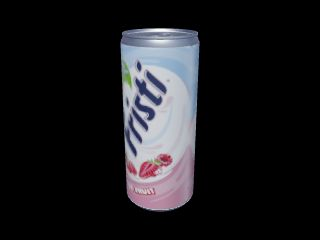
nieuwfristi.glbFristi Rood Fruit, blikje 250 ml (Wim)512 kB · 7.754 driehoeken · 1 texturen (max 2048 px)“Soda Can 250ml” — sebastian204, Sketchfab; etiket van de productfoto Fristi Rood Fruit 250 ml (FrieslandCampina, via PS in foodservice); CC BY 4.0
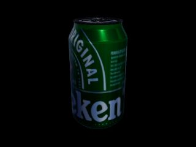
nieuwheineken-blik.glbHeineken, blik142 kB · 19.266 driehoeken · 2 texturen (max 1024 px)“Realistic Heineken can” — mihadshok9, Sketchfab; op maat en lichter gemaakt; CC BY 4.0
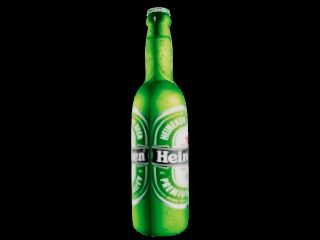
nieuwheineken-fles.glbHeineken, flesje106 kB · 5.152 driehoeken · 1 texturen (max 1024 px)“Heineken Bottle” — liontrike, Sketchfab; CC BY 4.0
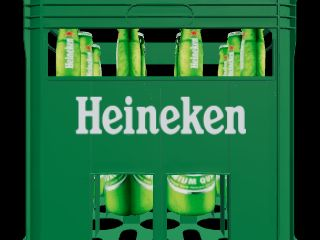
nieuwheineken-krat.glbHeineken, krat met flesjes381 kB · 25.316 driehoeken · 3 texturen (max 1024 px)“beer crate 12x750ml” — milansaman21, Sketchfab; groen met het Heineken-logo en twaalf flesjes (“Heineken Bottle”, liontrike); CC BY 4.0
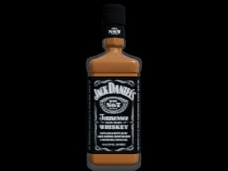
nieuwwhisky.glbJack Daniel's Old No.7250 kB · 25.561 driehoeken · 2 texturen (max 1024 px)“Jack Daniels Whiskey No.7 Bottle” — 3DDave247, Sketchfab; lichter gemaakt; CC BY 4.0
drone
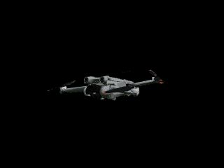
nieuwdrone.glbDJI Mini448 kB · 36.985 driehoeken · 2 texturen (max 256 px)“DJI 3 mini Pro” — wishmaster88, Sketchfab; CC BY 4.0
nieuwtrakker-tempest.glbTrakker Tempest RS Brolly, karpertent (open, met de Fox Camolite (node "stretcher") en de JBL Charge 6 (node "speaker") erin)715 kB · 74.508 driehoeken · 12 texturen (max 1024 px)Zelf gebouwd in Blender naar de productfoto's en maten van Trakker, met stofsimulatie (tools/tent/trakker-tempest.py); doek: “Fabric082A” — ambientCG (CC0); eigen werk + CC0
 nieuwbob.pngPortret Bob (menu)246 kBGetekend uit Bobs foto (tools/mensen/cartoon.py); eigen werk
nieuwbob.pngPortret Bob (menu)246 kBGetekend uit Bobs foto (tools/mensen/cartoon.py); eigen werk nieuwwim.pngPortret Wim (menu)339 kBGetekend uit Bobs foto (tools/mensen/cartoon.py); eigen werk
nieuwwim.pngPortret Wim (menu)339 kBGetekend uit Bobs foto (tools/mensen/cartoon.py); eigen werk